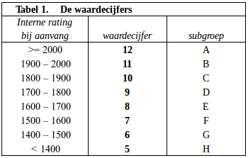
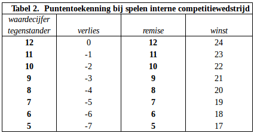
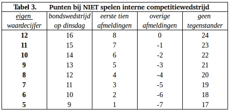

ALKMAARSE SCHAAKVERENIGING ‘DE WAAGTOREN’
– REGLEMENT INTERNE COMPETITIE –
Peter van Diepen, intern wedstrijdleider
telefoon: 06-24168122 e-mail: intern@waagtoren.nl aanmelden / afzeggen: 0-0-0.nl
1.
De interne competitie wordt gespeeld in één groep. Degene die het hoogst eindigt is de clubkampioen en krijgt een wisselbeker. Wanneer spelers gelijk eindigen als hoogste is de TPR beslissend en bij gelijke TPR bepaalt het percentage de clubkampioen.
2.
Je kunt alleen clubkampioen worden en prijzen winnen als je minstens 20 keer hebt gespeeld, waarbij oneven of reglementair gewonnen en op dinsdag gespeelde bondswedstrijden als zodanig meetellen.
3.
Het schaakseizoen begint na de zomervakantie en gaat door tot in juni. Spelers kunnen elkaar per seizoen meer dan 1 keer ontmoeten. Tussen twee partijen met dezelfde spelers moeten minstens 7 ronden liggen. Bij elke volgende partij met dezelfde spelers wisselen de spelers van kleur.
4.
Je kunt per ronde afzeggen door dat te noteren op een speciale absentielijst die in de speelzaal aanwezig is of met een e-mail naar afzeggen@waagtoren.nl. Een afzegging per e-mail is pas geldig als deze door de wedstrijdleider is bevestigd. Het is ook mogelijk om gebruik te maken van een aanmeldregeling. Dat betekent dat je je per ronde moet aanmelden via aanmelden@waagtoren.nl.
Je kunt ook je aanmeldingen / afzeggingen voor alle ronden bijhouden op 0-0-0.nl
5.
Op de eerste speelavond worden de aanwezigen volgens rating ingedeeld in 3 groepen, waarbij binnen elke groep van n spelers nummer 1 speelt tegen nummer ½n+1, nummer 2 tegen nummer ½n+2, enz.
Vanaf ronde 2 wordt ingedeeld op basis van de ranglijst, dus 1-2, 3-4, enz.
De wedstrijdleider kan een speler die laag staat, omdat hij weinig gespeeld heeft, handmatig indelen tegen een gelijkwaardige tegenstander. Daarbij houdt hij zoveel mogelijk rekening dat die indeling de strijd om het kampioenschap niet beïnvloedt.
6.
Het kan ook voorkomen dat er bij de indeling een oneven aantal spelers is, waardoor één persoon niet kan spelen. Dat zal in principe de persoon zijn, die het laagst op de ranglijst staat. Een speler die tijdens het vorige seizoen of dit seizoen al oneven is geweest, kan dit seizoen niet nog eens oneven zijn.
7.
De partijen beginnen om 20.00 uur. Indien een tegenstander nog niet is verschenen, dient de aanwezige speler de klok in werking te stellen. Is die tegenstander om 21.00 uur nog niet aanwezig, dan wordt de partij voor de aanwezige speler als reglementair gewonnen verklaard.
8.
Het speeltempo bedraagt 1 uur 40 minuten p.p.p.p. en 10 seconden extra per zet. Elke speler is verplicht de gespeelde zetten te noteren, tenzij hij minder dan 5 minuten denktijd over heeft.
Jeugdspelers van onder de 18 jaar (en leden die deze jeugdspelers vervoeren) hebben het recht met hun tegenstander van die avond een partij te spelen van 50 minuten p.p.p.p. en 10 seconden extra per zet. In overleg kan echter ook besloten worden het gewone speeltempo aan te houden.
9.
Er wordt gespeeld volgens de FIDE-Regels voor het Schaakspel, volgens de Officiële Nederlandse vertaling van de KNSB juli 2017. Daarbij geldt dat het laten afgaan van een mobiele telefoon (regel 11.3.2.2) niet tot verlies van de partij leidt. Bij een onregelmatigheid tijdens de partij dient degene, die de onregelmatigheid constateert, de klokken stil te zetten, waarna men in eerste instantie onderling tot een oplossing probeert te komen in overeenstemming met de FIDE-regels. Bij blijvende onenigheid dient de wedstrijdleider te worden geraadpleegd.
10.
Voor elk seizoen krijgt iedere speler een startrating die gelijk is aan zijn laatste KNSB-rating. Als er geen KNSB-rating is, of in andere bijzondere gevallen, bepaalt de wedstrijdleider in overleg met de speler zijn startrating.
Op basis van de startrating wordt de speler bij een subgroep met een waardecijfer ingedeeld. Het waardecijfer van een speler is gelijk aan de eerste twee cijfers van zijn rating (de linkerhelft) minus 8, met dien verstande dat het hoogste waardecijfer 12 bedraagt en het laagste 5. Zie tabel 1.
De waardecijfers blijven het gehele speelseizoen hetzelfde.

11.
Iedere speler begint met 300 startpunten.
12.
De puntentoekenning bij de interne partijen is als volgt: speel je remise, dan krijg je het waardecijfer van je tegenstander er bij. Win je, dan krijg je 12 punten meer dan zijn waardecijfer. En verlies je, dan krijg je 12 punten minder dan zijn waardecijfer. Zie tabel 2.

Dan zijn er nog vergoedingen voor niet intern spelen. Zie tabel 3.

Voor een bondswedstrijd op dinsdag krijg je je eigen waardecijfer plus 4 punten.
Voor een bondswedstrijd op een andere dag dan dinsdag krijg je altijd 4 punten. (Je kunt dus in een week je punten krijgen van dinsdag plus 4 punten voor elke bondswedstrijd op een andere dag dan dinsdag.)
Als je het gehele seizoen meedoet (uiterlijk beginnen in ronde 4) dan krijg je voor de eerste tien keer dat je afzegt je eigen waardecijfer min 4 punten. Als je later begint dan krijg je voor de eerste zeven keer dat je afzegt je eigen waardecijfer min 4 punten. Bij elke volgende afzegging krijg je je waardecijfer min 12 punten.
Als je niet speelt omdat je tegenstander niet komt opdagen of omdat je oneven bent, krijg je je eigen waardecijfer plus 12 punten.
13.
In alle gevallen waarin dit reglement niet voorziet, beslist het bestuur.